This is how we helped on-site clinics swap paper registers for one simple record that works for doctors, nurses and the employers who care for them.
Three value leaks
02Business brief: “We need a proprietary software system for our on-site clinics to stop revenue leakage, and drive wellness sales.”
Stakeholder interviews with sales and operations named three leaks.
Validate each leak with data, find its root cause, and design an EMR that fixes the most valuable one first, for doctors, nurses, patients and the HR teams who renew the contract.
No digital health records existed. Every prescription, lab order and diagnosis lived in paper registers, with no searchable history.
What we asked the sales team, employees and clinic staff
Clients renew on proof. These are the metrics HR decision-makers ask for:
Most employees never knew, or never trusted, the clinic's pharmacy and lab services. Survey of 5,000 employees, 1,780 replied.
The need is real, but willingness to pay is not there yet. Interest is almost double the intent to pay.
With the business case validated: how do doctors, nurses and patients actually move through the clinic, and where does it break down?
Observation with simulated patients, plus semi-structured interviews.
Patients carry the paperwork, and still wait after booking.
Prescribing takes 2 minutes. Handing the medicine over takes 20.
Paper is fast for the doctor, and expensive for everyone after them.
“My medical information will not be available with my HR or manager, right?”
A direct tension between two validated problems: renewals need HR-facing reporting, while patients need their data kept away from the employer. The EMR's data architecture has to resolve both, with aggregate reports only.
Four people, one record they all depend on.
Time-crunched and not very tech-savvy. If the interface slows her down, she goes back to paper.
Covers triage, vitals, the queue, medicine handover and bio-waste logs across one shift.
Lives with a lifestyle disorder. The face behind the leakage numbers and the chronic-care opportunity.
Owns the wellness programme. Has no data on absenteeism or workforce health to bring to renewals.
Trust and awareness first, then the handover.
What phase 1 can ship, checked with the tech lead before wireframing.
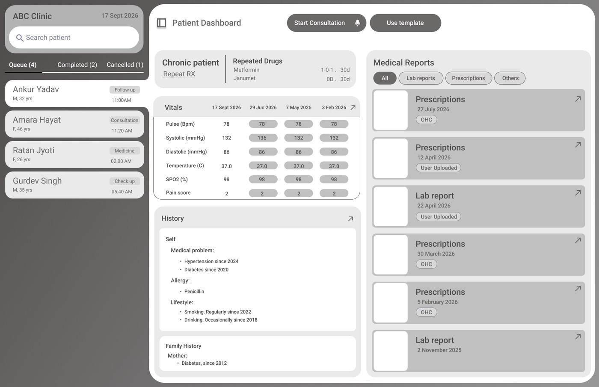
Every consult starts with the history, not from the patient's memory.
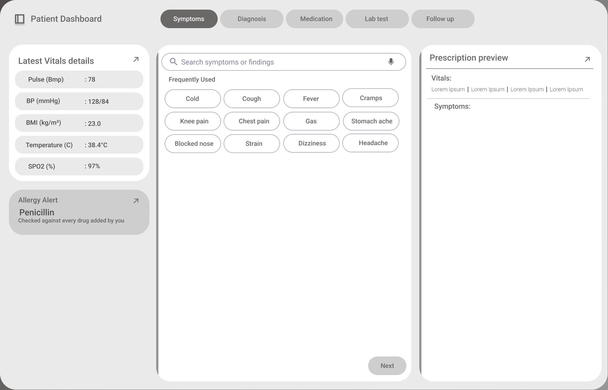
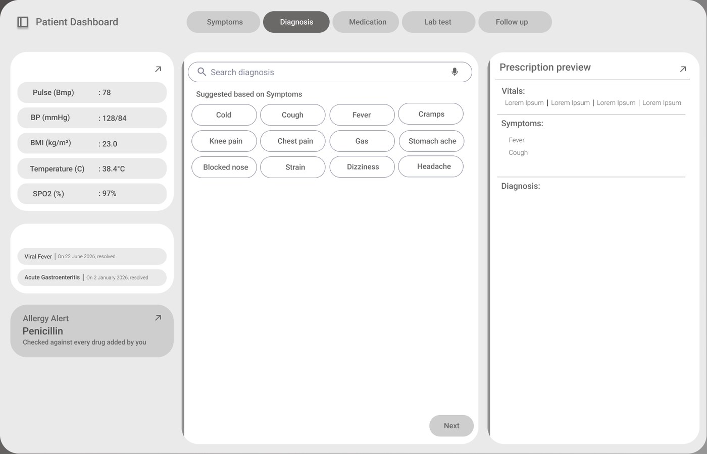
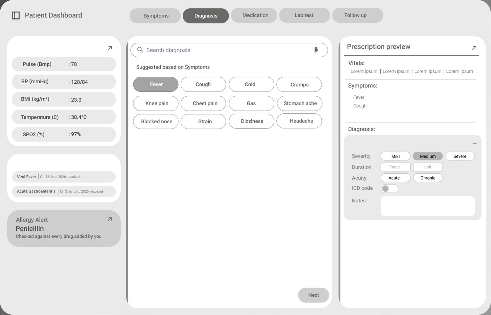
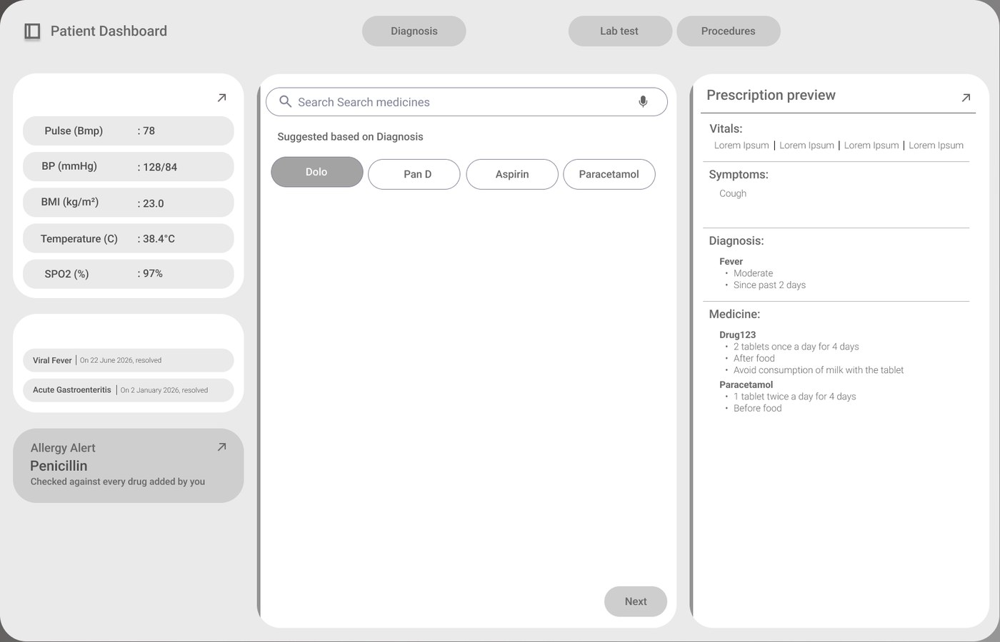
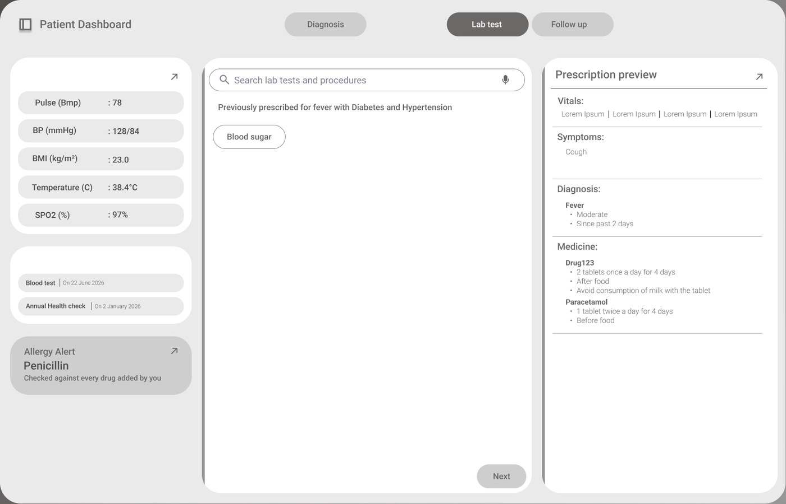
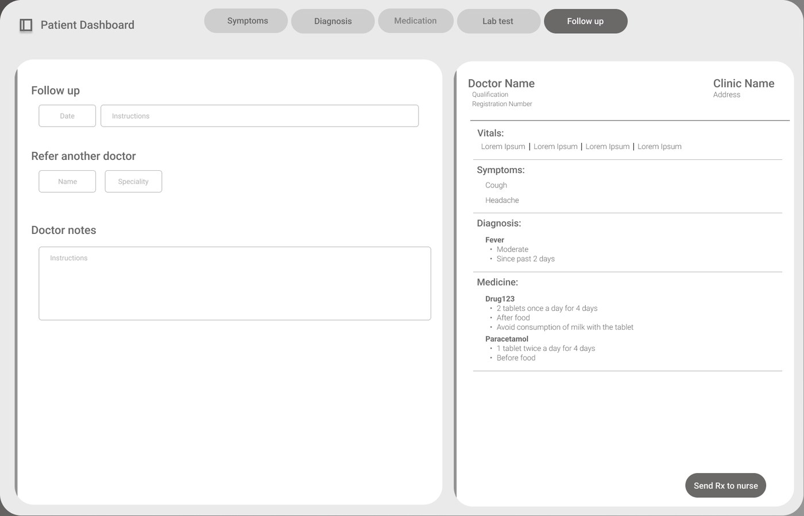
Five tabs, one live preview: each step suggests the next, so the doctor taps instead of types.
Calm by default, loud only for safety.
Three columns and a handful of parts, used on every screen.
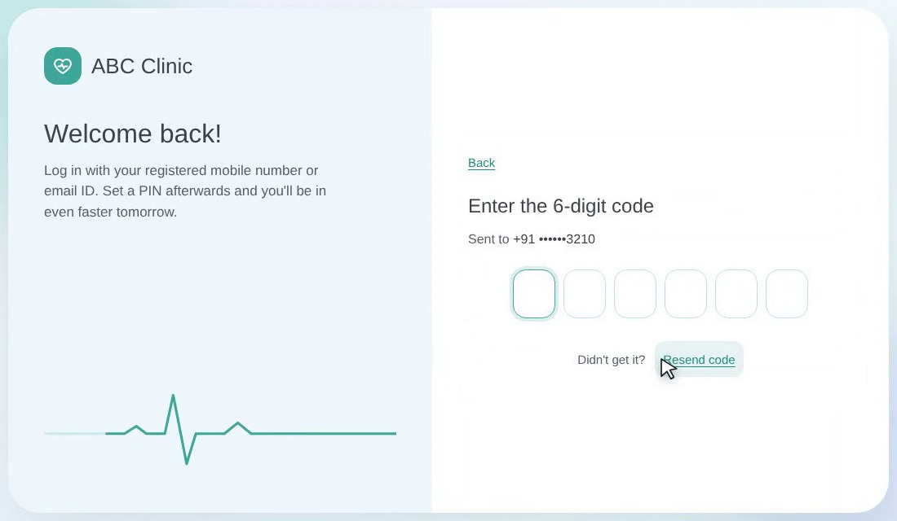
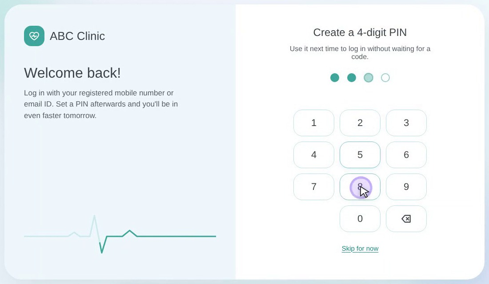
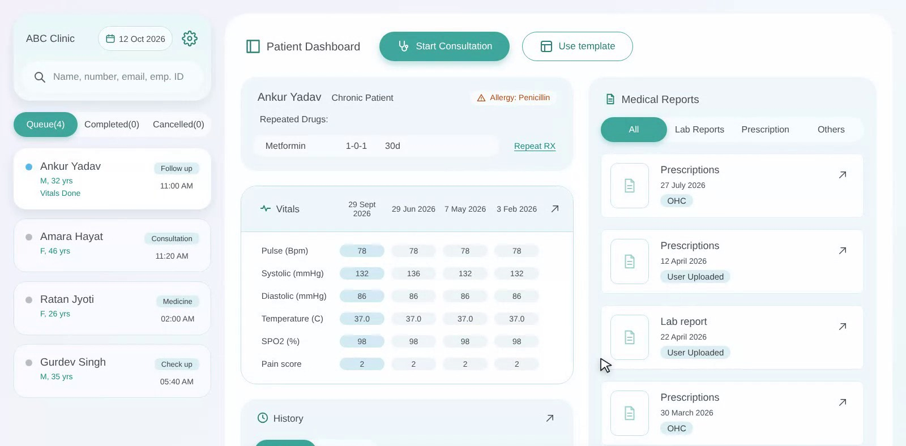
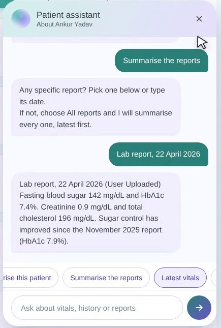
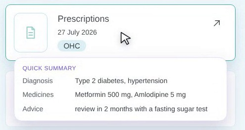
Logging in takes seconds, and the whole patient sits on one screen.
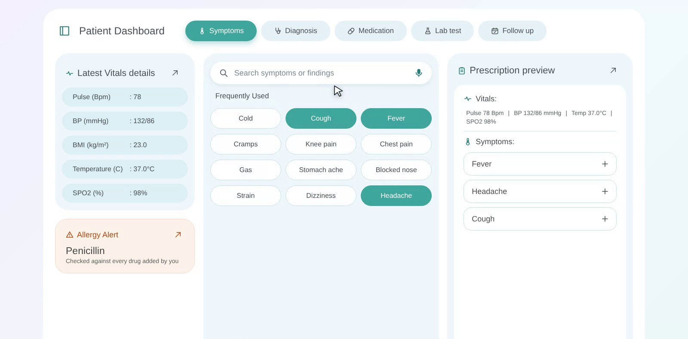
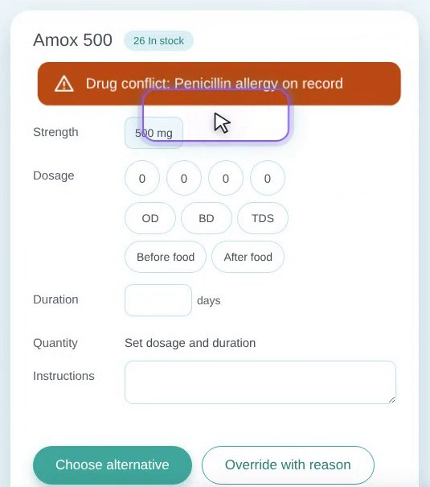
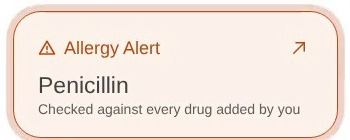
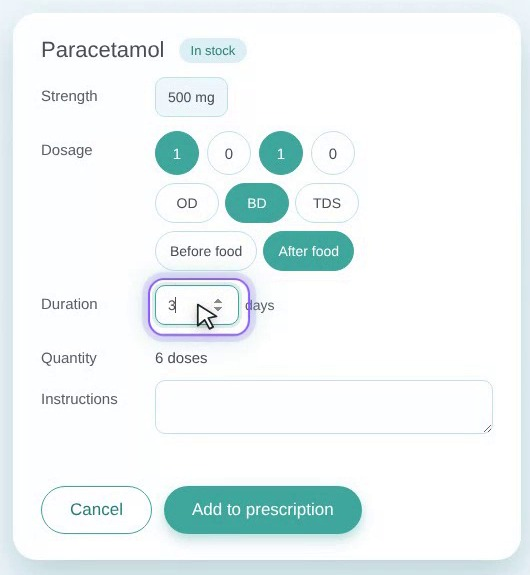
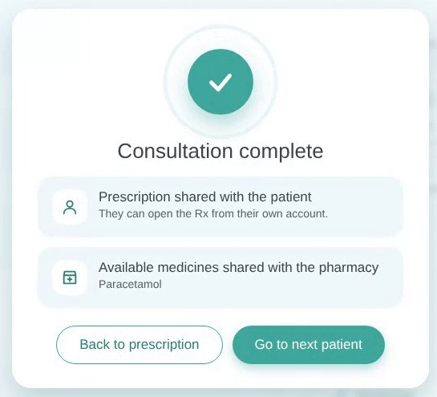
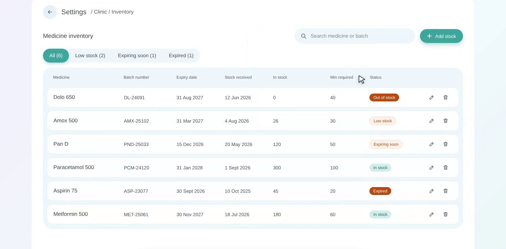